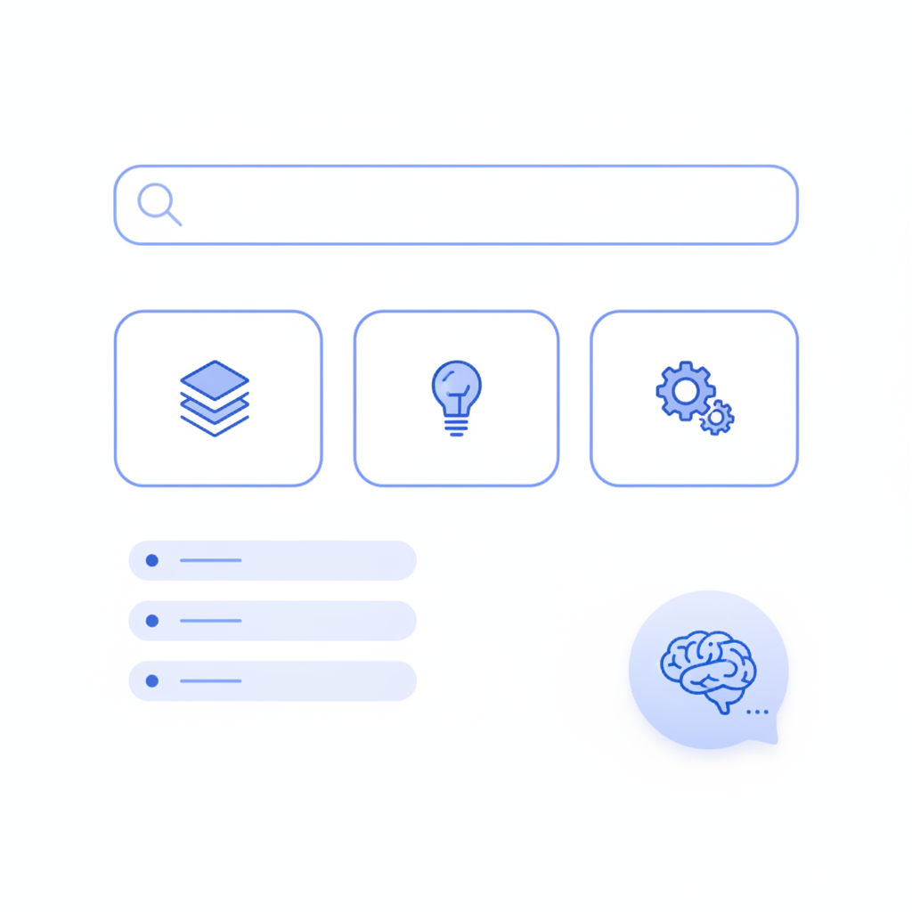
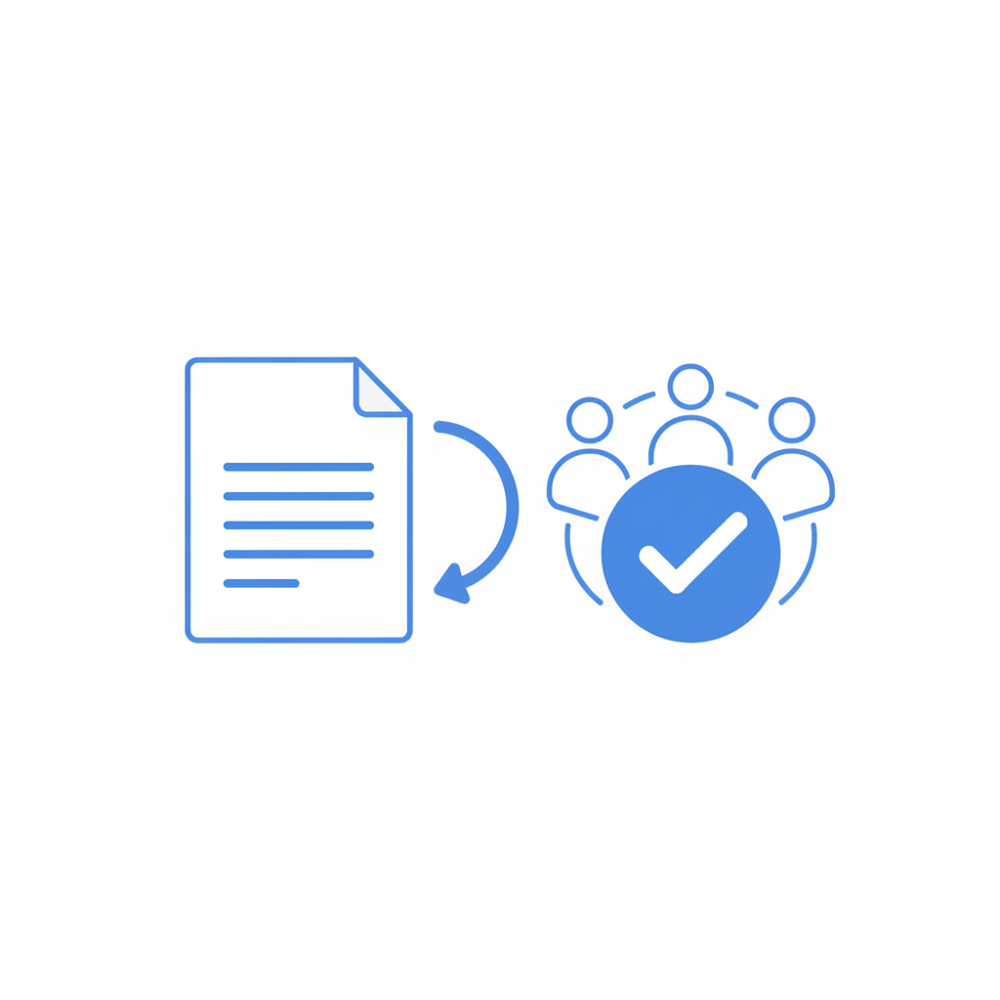

Your support team is answering the same ten questions. Again. The answers exist somewhere — in an email thread, a shared doc, a Slack message from six months ago — but customers can't find them on their own, so they open a ticket. Every time.
AI knowledge base software exists to break this cycle. Done right, a well-structured knowledge base answers those repeat questions automatically, deflects a significant share of incoming tickets, and frees your team to handle work that actually needs a human. This guide explains what AI knowledge base software is, what it can realistically do for a support or documentation team, and how to pick and set one up — no developer required.
A knowledge base is a structured, searchable collection of articles, guides, FAQs, and documentation that helps users answer their own questions. An AI-powered knowledge base layers machine learning on top of that content in two key ways:
The distinction matters because a traditional knowledge base relies on users phrasing their question exactly right and then choosing the right article. An AI layer removes both of those friction points.
The numbers driving adoption are straightforward:
Beyond cost, there is a user-experience argument. Most customers prefer finding their own answer to waiting for a reply. A well-maintained knowledge base is not a cost-cutting shortcut; it is a better product for the people you serve.
Not every platform marketed as "AI-powered" provides the same depth of capability. These are the features that matter most for non-technical teams.
The most impactful AI feature is an answer generator that reads your documentation and responds to questions directly. A user asks "how do I add a new team member?" and gets a step-by-step answer drawn from your actual content — not a list of possibly-related articles.
Look for a platform where this feature is included in a reasonable plan tier, uses your own documentation as its source (not generic AI training data), and cites the article it drew from so users can read more.
If setting up or updating your knowledge base requires developer help, it will not stay current. The best tools for support and documentation teams use a WYSIWYG editor, integrate with tools authors already use (like Google Docs), and let you publish updates with one click.
Teams that integrate their existing Google Docs workflow — drafting in Docs and syncing to the knowledge base — report significantly shorter update cycles and less version-drift between internal drafts and published content.
Search quality determines whether self-service actually works. Look for full-text search with relevance scoring, not just title matching. If your product serves international users, per-language search indices matter: a French user querying in French should surface French-language articles, not English ones.
You cannot improve what you do not measure. Useful analytics include which articles get the most views, where users drop off, which searches return no results, and per-article user feedback (thumbs up / thumbs down, or short comments). These signals tell you exactly where to invest your next documentation sprint.
Support and compliance teams often need a review step before an article goes live. Approval workflows — even simple ones — prevent drafts from being published accidentally and create an auditable trail for regulated industries.
The most common reason teams delay building a knowledge base is the assumption that it requires technical setup. It does not. Here is a realistic starting sequence.

A few principles that consistently separate high-performing knowledge bases from ones that collect dust:
Internal terminology that your team uses every day is often invisible to the customer. Test every article with someone unfamiliar with your product before publishing.
Most users skim. Use short paragraphs, numbered steps, and headers that answer the question rather than describe the topic. "How to reset your password" outperforms "Password Management" as a heading.
A wrong answer erodes trust faster than no answer. Assign article ownership, set review-by dates, and treat content maintenance as part of your team's regular workflow — not a side project.
AI tools are excellent at flagging frequently-searched-but-unanswered queries and summarising long documents into starter articles. They are not a substitute for a subject-matter expert owning the final content.
Every article should give users a way to signal whether it helped. Even a simple yes/no rating generates the data you need to prioritise rewrites.
The right platform depends on who your users are and who will maintain the content. A few dimensions worth comparing:
| Requirement | What to look for |
|---|---|
| Non-technical authoring team | WYSIWYG editor, Google Docs integration, no markdown required |
| International user base | Machine translation, per-language search indices |
| External-facing documentation | Custom domain, SEO metadata, mobile-responsive viewer |
| Compliance-sensitive content | Approval workflows, version history, access control |
| AI Q&A over your own docs | Built-in AI answer generator using your content as source |
Tools like Sonat (Docer) are specifically built for non-technical teams that need to publish professional documentation without engineering support — combining WYSIWYG and Google Docs authoring with AI-powered Q&A, custom domains, and machine translation across 184 languages on a single platform.
Before committing to any platform, verify that the AI answer feature uses your own documentation as its knowledge source, that analytics are included in your plan tier, and that the publishing workflow requires no ongoing developer involvement.
AI knowledge base software is not a silver bullet, but it is one of the higher-leverage investments a support or documentation team can make. The compounding logic is simple: content written once, structured well, and kept current deflects questions indefinitely — and AI layers on top of that content make self-service work for more users, including those who do not phrase their questions perfectly.
The hardest part is starting. Pick your ten most common tickets, write your first ten articles, and publish. Everything after that is iteration.